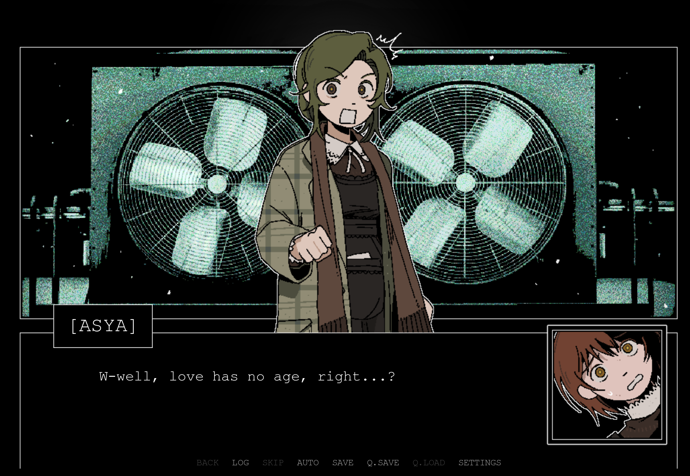

I was very drawn to this game for whatever reason, mainly from the opening movie I believe. I was happy that I was able to just sit down and beat a game for once, I have not been able to do that in a good while. While the game is somewhat confusing at the end, I really like the world that is built and I really loved the character interactions.